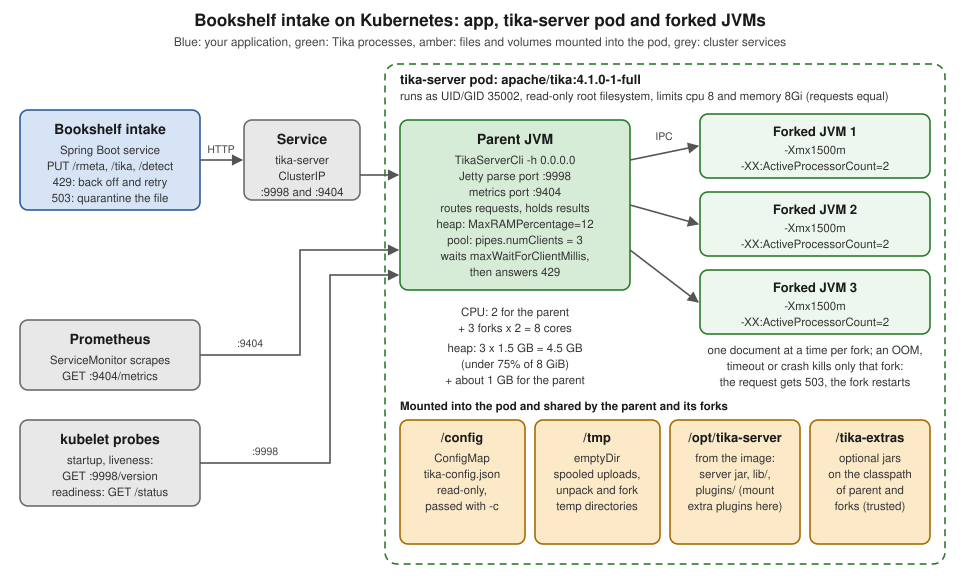

Docker & Kubernetes Deployment
|
This content was generated with the assistance of AI and should be verified against the official documentation before being relied on in production. |
Baseline date: 2026-10-12. This page was written against Apache Tika 4.1.0 (the latest release on Maven Central and the
newest stable image on Docker Hub on that date) with the 3.3.x differences noted, Java 21 and later on the client side
(Tika 4.x needs Java 17; the 4.1.0 server images ship OpenJDK 25), Spring Boot 4.x on Spring Framework 7 for the
Bookshelf intake service, and the Docker images apache/tika:4.1.0-1, apache/tika:4.1.0-1-full and
apache/tika-grpc:4.1.0-1. It explains which image to pick and which tag to pin, what is inside the image and how to
mount configuration, jars and plugins into it, how the JVM sizes itself inside a container and why the forked JVMs
change the arithmetic, how to keep the server off the public network, a Docker Compose file for the Bookshelf intake
service, and a Kubernetes Deployment with sizing, probes, security settings and metrics.
The page does not repeat container basics. For those, see the site’s Docker section (in particular Running Containers, Images, Layers and Tags and Docker Compose Fundamentals) and the Kubernetes section (in particular Resource Management, Health Probes and Container Lifecycle and Network Policies). For the server itself, read Tika Server (REST API); for the timeouts and limits that decide when a fork is killed, read Robustness, Limits & Timeouts; for the threat model, read Security.
How this page was checked. No image was pulled. The image tags, digests, sizes, platforms, user, working directory, entry
point and environment were read from the Docker Hub API and from the image configuration blobs in the registry. The
Dockerfiles were read at the 4.1.0 tag of apache/tika. The server behaviour (startup log, sizing decisions, metrics,
probes, the effect of JAVA_TOOL_OPTIONS, shutdown) was observed by running the official
tika-server-standard-4.1.0.zip locally on Java 25, launched exactly as the image’s entry point launches it. The Compose
file was validated with docker compose config, and the Kubernetes manifests were parsed as YAML, but neither was run
for this page. The section What was verified and what
was not gives the details.
The deployment at a glance
In 4.x every parsing endpoint of tika-server (/tika, /rmeta, /meta, /unpack, /detect) runs its work in a
forked JVM managed by Tika Pipes. So one container is not one JVM: it is a light parent JVM that owns the HTTP ports,
and up to pipes.numClients forked JVMs that parse one document each at a time. A document that crashes, exhausts
memory or times out kills one fork; the request gets a 503, the fork is restarted, and the parent stays up. That model
drives most of this page: the container memory and CPU limits must cover the forks, not just the parent.

The figure shows the Kubernetes deployment built at the end of the page: two replicas of a pod with 8 CPUs and 8 GiB,
each running three forks with a 1.5 GB heap. The same shape applies to a single docker run on a laptop, with the
container limits playing the role of the pod limits.
| Line | Container process model | Consequence for sizing |
|---|---|---|
4.x ( |
Parent JVM plus up to |
Memory and CPU limits must cover the parent and every fork. Tika divides the heap and the CPUs between the forks automatically unless you set them. |
3.x ( |
Parent watchdog plus a single forked server process by default ( |
One child heap to size, set with |
1.x |
One JVM. |
One heap. 1.x images still exist on Docker Hub but the line has been unsupported since 30 September 2022. |
Choosing an image
The project publishes two repositories on Docker Hub: apache/tika (the REST server, port 9998, in a minimal and a
-full variant) and apache/tika-grpc (the gRPC server, port 9090). Since 4.0.0-alpha-1 the Dockerfiles live in the
main source tree, under tika-server/docker-build/ and tika-grpc/docker-build/; the older apache/tika-docker
repository still builds 3.x patch images and its README still describes the pre-4.x tags.
| Image | Contents (from the 4.1.0 Dockerfiles) | Port and platforms | Compressed size of 4.1.0-1 on amd64 |
|---|---|---|---|
|
Ubuntu 26.04 (resolute, pinned by digest), |
9998; |
about 190 MB (189,787,970 bytes) |
|
The minimal content plus Tesseract OCR with the |
9998; |
about 589 MB (589,425,668 bytes) |
|
Ubuntu 26.04, a JRE (the Dockerfile’s default |
9090; |
about 1.03 GB (1,033,715,238 bytes) |
Which one for Bookshelf? The intake service receives scanned-loan-form.pdf and book-cover.jpg, which need OCR, so it
runs -full. A deployment that only receives born-digital files (manuscript.docx, catalogue.pdf, novel.epub,
reviews-es.html) should take the minimal image: a third of the size, a smaller attack surface, and nothing that shells
out to native programs. Choose -full when you OCR scanned documents, parse geospatial rasters with GDAL, or feed audio
and video to a MEDIA inference binding (ffmpeg); see OCR with
Tesseract and VLM Parsers & Inference. Choose
apache/tika-grpc only when your clients speak gRPC; it is a different server with its own configuration, covered in
Tika gRPC.
OMP_THREAD_LIMIT=1 in the -full and gRPC images stops each Tesseract process from starting one OpenMP thread per
core. With several forks each running OCR, unlimited OpenMP threads would oversubscribe the CPU the same way unlimited
GC threads do (see Memory and CPU inside a container). Keep it unless you have measured a reason not
to.
If none of the variants fits (for example you need Tesseract language packs the -full image does not install), build
your own image FROM one of them rather than from scratch. The full/Dockerfile accepts a LANGUAGES build argument
for the Tesseract packs, but it downloads the signed release zip from an Apache mirror and verifies it against the
project KEYS file, so it builds only released versions, never your working tree.
# Bookshelf variant of the full image with Portuguese and Dutch OCR packs added.
FROM apache/tika:4.1.0-1-full
USER root
RUN apt-get update \
&& DEBIAN_FRONTEND=noninteractive apt-get install --yes --no-install-recommends \
tesseract-ocr-por tesseract-ocr-nld \
&& apt-get clean && rm -rf /var/lib/apt/lists/*
USER 35002:35002The USER root / USER 35002:35002 pair matters: the base image ends with USER 35002:35002, so apt-get would fail
without switching, and forgetting to switch back would run your image as root. This Dockerfile was not built for this
page; the package names are the Ubuntu ones the official full/Dockerfile composes from its
LANGUAGES argument.
Tags, digests and platforms
Starting with 4.0.0-alpha-1 every image is published under three kinds of tag:
| Tag form | Example | Behaviour |
|---|---|---|
|
|
Rolling. Moves when the image is rebuilt for the same Tika release (for example for a base-image security fix). |
|
|
Immutable, never reassigned. |
|
|
Rolling, newest stable release only. Pre-releases never move it. Never deploy it. |
Snapshot tags (4.2.0-SNAPSHOT, 4.1.1-SNAPSHOT and their -full twins) are rebuilt from development branches and
must not be deployed either.
On the baseline date Docker Hub showed these tags for 4.1.0, all published on 29 September 2026:
| Tags | Image index digest |
|---|---|
|
|
|
|
So latest now points at 4.1.0. The README of the old apache/tika-docker repository still says latest tracks the 3.x
line; that text predates 4.0.0 and is no longer true.
For a reproducible deployment pin the immutable tag and the digest. The tag documents intent for humans, the digest is what the runtime actually checks:
docker pull apache/tika:4.1.0-1-full@sha256:ab9cc988828c594d32d6409e1850d1c8d83152ea793ef5fe0e7862ac0f9e5891To read the same metadata without pulling, ask the registry for the manifest. docker buildx imagetools inspect prints
the platforms and digests; the configuration (user, entry point, environment) is in the image config:
docker buildx imagetools inspect apache/tika:4.1.0-1-full
docker buildx imagetools inspect --format '{{json .Image}}' apache/tika:4.1.0-1-fullThese two commands were not run here; the values on this page were read with plain HTTP calls to the Docker Hub tag API
and to registry-1.docker.io (token, image index, manifest, config blob), which is what those commands do.
Platforms. apache/tika 4.x is published for linux/amd64, linux/arm64 and linux/s390x, and docker pull picks the
right one, so the same tag works on an x86 build server, an Apple Silicon laptop and an AWS Graviton node.
apache/tika-grpc is published for linux/amd64 and linux/arm64 only. 32-bit ARM (linux/arm/v7) was dropped: on
Docker Hub the last tag that carries it is 3.3.0.0.
The 3.x line uses a different scheme: four-part tags <tika-version>.<docker-build> such as 3.3.1.0 and
3.3.1.0-full, still built from apache/tika-docker. On the baseline date the newest 3.x image was 3.3.1.0 (27 May
2026); there was no image for 3.3.2 on Docker Hub, although 3.3.2 was released on 16 July 2026. If you must stay on 3.x,
build your own image from the 3.3.2 zip or accept 3.3.1, and read
Security before choosing.
Source: tika-server/docker-build/CHANGES.md
at 4.1.0, Docker Hub, apache/tika,
Docker Hub, apache/tika-grpc and
apache/tika-docker. For tag and digest mechanics in general, see
Images, Layers and Tags and
Registries and Docker Hub.
What is inside the image
Everything you mount or override has to fit this layout. The values below come from the apache/tika:4.1.0-1 and
4.1.0-1-full image configurations and from the tika-server-standard-4.1.0.zip that the Dockerfile unzips:
| Path or setting | Value |
|---|---|
|
The unzipped distribution: |
Working directory |
|
|
On the classpath, absent from the image until you mount or copy something there. Extra jars go here. |
User |
|
Entry point |
|
Command |
None. Whatever you put after the image name ( |
Environment |
|
Exposed port |
|
Writable paths |
Only the JVM temp directory, |
Three consequences:
-
Do not pass
-hagain. The entry point already binds to0.0.0.0inside the container; network exposure is decided by how you publish the port, not by-h. Pass-c,-p,-iand--metricsPortas needed. -
In Kubernetes use
args:, notcommand:.command:replaces the image’s entry point, and with it the classpath that includes/tika-extrasandlib/. The official Compose example for custom OCR overrides the entry point only because it adds a directory to the classpath, and it copies the wholejava -cp ...line to do so. -
Anything you mount must be readable by UID 35002. A bind-mounted
tika-config.jsonwith mode0600owned by your user fails at startup with a permission error. Directories the server writes to must be writable by that UID; in practice that is only/tmp.
What a container actually runs looks like this. The process list below comes from the local run that reproduced the
entry point, with the paths rewritten to the container layout; the forked JVMs read most of their arguments from an
@-file in their temp directory:
java -cp /opt/tika-server/*:/opt/tika-server/lib/*:/tika-extras/* org.apache.tika.server.core.TikaServerCli -h 0.0.0.0 -c /config/tika-config.json
java @/tmp/pipes-server-0-17241709522081129930/jvm-args.txt -Djava.awt.headless=true -Dlog4j.configurationFile=classpath:pipes-fork-server-default-log4j2.xml -DpipesClientId=0 -Xmx1g -XX:ErrorFile=...
java @/tmp/pipes-server-0-8531678959168089369/jvm-args.txt -Djava.awt.headless=true ... -Xmx1g ...Source: Apache Tika 4.1.x, Running Tika in Docker, What is
inside, the
minimal Dockerfile at 4.1.0 and
the image configuration of apache/tika:4.1.0-1 on Docker Hub.
Running a container
The smallest useful run publishes the port on the loopback interface only:
docker run -d --name tika -p 127.0.0.1:9998:9998 apache/tika:4.1.0-1
curl -s http://localhost:9998/version
curl -s -T catalogue.pdf http://localhost:9998/tika/textOutput (from the local run of the same 4.1.0 distribution with the image’s classpath, no configuration file):
Apache Tika 4.1.0
Bookshelf spring catalogue
Forty titles from independent publishers.In 4.x the output format is chosen by the path (/tika/text, /tika/md, /tika/xml), not by an Accept header; see
Tika Server (REST API).
The startup log shows what the server decided, which is the first thing to check after deploying:
INFO org.apache.tika.server.core.TikaServerProcess Starting Apache Tika 4.1.0 server
INFO org.apache.tika.pipes.core.PipesParser Using per-client server mode with 3 clients
INFO org.apache.tika.pipes.core.PerClientServerManager pipes-cpu-sizing: hostCores=8, numClients=3, parentReserved=2, autoCap=slice=2, heap=MaxRAMPercentage=25
INFO org.apache.tika.server.core.TikaServerProcess Pipes-based parsing enabled for /tika, /rmeta, /unpack, /meta, /detect, and /pipes endpointsOn a host with 8 cores and no configuration, the server chose three forks, gave each fork a view of 2 CPUs, and
capped each fork’s heap at 25% of the memory the JVM can see. Inside a container "the memory the JVM can see" is the
container limit; without a limit it is the whole host, which is how three forks plus the parent can each believe they may
take a quarter of a 64 GB node. Always set --memory and --cpus (or the Compose and Kubernetes equivalents):
docker run -d --name tika \
--memory 4g --cpus 4 \
--read-only --tmpfs /tmp:size=1g \
--cap-drop ALL --security-opt no-new-privileges \
-p 127.0.0.1:9998:9998 \
apache/tika:4.1.0-1--read-only with a tmpfs at /tmp works because /tmp is the only place the server writes. A tmpfs lives in RAM and
counts towards the container memory, so size it to the uploads you accept (maxRequestSizeBytes) times the requests in
flight, or mount a volume at /tmp instead.
Source: Apache Tika 4.1.x, Running Tika in Docker and
Apache Tika 4.1.x, Tika Server, Basic Usage. For the
docker run flags, see Running Containers and
Docker Security.
Mounting tika-config.json
Mount the file read-only and point the server at it with -c, after the image name:
docker run -d --name tika --memory 6g --cpus 6 \
-v "$(pwd)/tika/tika-config.json:/config/tika-config.json:ro" \
-p 127.0.0.1:9998:9998 \
apache/tika:4.1.0-1-full -c /config/tika-config.jsonThe Bookshelf intake configuration used by the Compose file below:
{
"server": {
"port": 9998,
"metricsPort": 9404,
"endpoints": ["tika", "rmeta", "meta", "detect", "unpack", "version", "status"],
"maxRequestSizeBytes": 104857600
},
"pipes": {
"numClients": 2,
"forkedJvmArgs": ["-Xmx1500m"],
"maxWaitForClientMillis": 30000,
"maxFilesProcessedPerProcess": 5000
},
"parse-context": {
"timeout-limits": {
"totalTaskTimeoutMillis": 300000,
"progressTimeoutMillis": 60000
}
},
"parsers": [
{ "default-parser": {} }
]
}What each part does in a container:
| Key | Why it is there |
|---|---|
|
Turns on the Prometheus endpoint on a second port. Off by default. |
|
Only what the intake service calls, plus |
|
100 MB instead of the 1 GiB default. Bodies above |
|
Two forks: on 6 CPUs that leaves 2 for the parent and 2 per fork (see Memory and CPU inside a container). |
|
An explicit heap per fork, which also switches off the automatic heap division. |
|
How long a request waits for a free fork before it gets |
|
Recycle each fork after 5,000 documents (default 10,000), which bounds slow leaks in native libraries. |
|
The per-document deadlines; see Robustness, Limits & Timeouts. |
This file was loaded by the local 4.1.0 server, which parsed catalogue.pdf and manuscript.docx through /tika,
/rmeta/text and /meta with it, and logged:
pipes-cpu-sizing: hostCores=8, numClients=2, parentReserved=2, autoCap=slice=3, heap=user-set in forkedJvmArgs(slice=3 because the test host had 8 cores, not the 6 the Compose file grants.)
Points that bite in containers:
-
A server configuration needs a
serversection. Atika-config.jsonwith onlypipesandparsersmakes the 4.1.0 server refuse to start withTikaConfigException: Couldn't find 'server' element. An empty"server": {}is enough. -
The command line wins for host, port, id and metrics port.
-h,-p,-iand--metricsPortoverride the JSON; everything else (allowPipes,allowPerRequestConfig, CORS, TLS, timeouts) is JSON-only. The image always passes-h 0.0.0.0, soserver.hostin the file has no effect in a container. -
Secrets come from the environment. Since 4.1.0 any string value may reference
${env:NAME}, so a fetcher key or a VLM API key is passed with-e NAME=...(or a Kubernetes Secret) instead of being written into the file. See Configuration for the rules. -
Restart to reload. The file is read once at startup. A changed ConfigMap or bind mount takes effect only after the container restarts.
3.x images expect the XML format instead, with the fork settings inside <server>. The rough 3.x equivalent of the fork
settings above (3.3.x, for comparison only):
<properties>
<server>
<port>9998</port>
<taskTimeoutMillis>300000</taskTimeoutMillis>
<maxFiles>5000</maxFiles>
<forkedJvmArgs>
<arg>-Xmx1500m</arg>
</forkedJvmArgs>
<endpoints>
<endpoint>tika</endpoint>
<endpoint>rmeta</endpoint>
</endpoints>
</server>
</properties>Source: Apache Tika 4.1.x, Running Tika in Docker,
Configuration, Apache Tika 4.1.x, Tika Server,
Configuration, Apache Tika 4.1.x, Pipes Configuration and,
for the 3.x form, tika-server-core/src/test/resources/configs/tika-config-server.xml at the 3.3.2 tag of
apache/tika.
Extra jars: /tika-extras
Mount a directory of jars at /tika-extras. It is already on the parent’s classpath, and Tika forwards it to the forked
JVMs:
docker run -d --name tika -p 127.0.0.1:9998:9998 \
-v "$(pwd)/bookshelf-extras:/tika-extras:ro" \
apache/tika:4.1.0-1 -c /config/tika-config.jsonTypical contents are an optional component that the standard package leaves out (a tika-eval metadata filter, an extra
parser module), an optional dependency such as jai-imageio-jpeg2000 (check its licence first), or your own component,
for example the Bookshelf shelf-code metadata filter written in
Configuration and the custom parsers of
Extending Tika. Components registered through SPI or @TikaComponent are
found the same way as on the plain zip, where the equivalent is the tika.extras.dir system property.
For production, bake the jars into your own image instead of mounting them, so the code that runs is versioned with the image digest:
FROM apache/tika:4.1.0-1@sha256:06bcdbd09aca073293e5a171ad161418cc93c91d58d9e4e205064eade84889d4
COPY bookshelf-extras/*.jar /tika-extras/COPY creates /tika-extras owned by root with world-readable files, which is what you want: UID 35002 can read the jars
but not replace them. Treat this directory as trusted code: anything in it runs with the full privileges of the Tika
process, in the parent and in every fork. Never make it writable by the server, by request handling, or by a less
trusted team.
Jars on /tika-extras share one classpath with lib/. A jar that brings its own copy of POI, PDFBox, Jackson or Log4j
will clash with the versions in lib/; ship only the component and the dependencies that lib/ does not already
contain. See Setup & Installation for the dependency-clash
discussion.
This page did not mount a real extras directory; the forwarding to forks is stated by the 4.1.x Docker page.
Pipes plugins
The synchronous endpoints need no plugins. /pipes and /async (enabled with allowPipes), and the pipes-mode tika-app
and tika-grpc, need the fetcher, emitter, iterator or reporter plugins for whatever they talk to. Plugins are pf4j
plugins, one directory each, discovered under /opt/tika-server/plugins/. The image bundles only
tika-pipes-file-system, whose directory shows the layout every plugin has:
/opt/tika-server/plugins/tika-pipes-file-system/
├── plugin.properties
├── classes/META-INF/...
├── lib/tika-pipes-file-system-4.1.0.jar
├── lib/tika-pipes-reporter-commons-4.1.0.jar
├── lib/jackson-datatype-jsr310-2.22.3.jar
├── LICENSE
└── NOTICEThe other 4.1.0 plugins are published as zips next to the release on the Apache download site
(https://downloads.apache.org/tika/4.1.0/): tika-pipes-s3, tika-pipes-gcs, tika-pipes-az-blob, tika-pipes-http,
tika-pipes-es, tika-pipes-opensearch, tika-pipes-solr, tika-pipes-jdbc, tika-pipes-kafka, tika-pipes-csv,
tika-pipes-json, tika-pipes-google-drive, tika-pipes-microsoft-graph and tika-pipes-atlassian-jwt, each as
<name>-4.1.0.zip. The jars on Maven Central are not the plugin packaging. The container cannot expand a zip in place,
because /opt/tika-server is root-owned while the server runs as UID 35002, so unzip on the host and mount the directory:
curl -fsSLO https://downloads.apache.org/tika/4.1.0/tika-pipes-s3-4.1.0.zip
curl -fsSLO https://downloads.apache.org/tika/4.1.0/tika-pipes-s3-4.1.0.zip.asc
gpg --verify tika-pipes-s3-4.1.0.zip.asc tika-pipes-s3-4.1.0.zip
unzip -l tika-pipes-s3-4.1.0.zip | head # plugin.properties must end up directly inside the plugin directory
unzip -q -d tika-pipes-s3 tika-pipes-s3-4.1.0.zip
docker run -d --name tika -p 127.0.0.1:9998:9998 \
-v "$(pwd)/tika-pipes-s3:/opt/tika-server/plugins/tika-pipes-s3:ro" \
-v "$(pwd)/tika/tika-config.json:/config/tika-config.json:ro" \
apache/tika:4.1.0-1 -c /config/tika-config.jsonOr bake it into an image, which is the better choice for Kubernetes:
FROM apache/tika:4.1.0-1
COPY tika-pipes-s3/ /opt/tika-server/plugins/tika-pipes-s3/The S3 zip is about 15.6 MB and the Elasticsearch one about 3 MB (from the download server’s Content-Length). They
were not downloaded for this page, so whether a zip contains a top-level directory was not checked: run unzip -l first
and make sure plugin.properties lands directly under plugins/<name>/. The plugin configuration itself, and the
allowPipes gate, are explained in Tika Pipes and
Tika Server (REST API).
Plugins are code too. The same trust rule as for /tika-extras applies.
Memory and CPU inside a container
On JDK 17 and later the JVM reads the cgroup limits of its container: Runtime.availableProcessors() returns the CPU
limit (--cpus, resources.limits.cpu) and the default heap is a fraction of the memory limit. Tika builds on that and
sizes the forks from the same numbers. The rules, verified in the 4.1.0 source (PipesConfig, PerClientServerManager)
and in the local runs:
| Setting | Rule in 4.1.0 | Observed on an 8-core host |
|---|---|---|
Default |
|
|
Fork CPU view |
|
|
Fork heap |
|
|
Parent heap |
The JVM default, about 25% of the container memory. Tika does not change it. |
25% |
The arithmetic, then, for a container with memory M and n forks:
-
CPU: give the container at least two cores per fork plus two for the parent. Pick the largest
numClientsfor which two cores per fork plus two still fit in the CPU limit. The official table shows 8 cores with 3 forks and 16 cores with 4 forks as the sweet spots; past that, more forks slow the server down. -
Heap:
ntimes the fork heap must stay under 75% ofM(Tika warns at startup when an explicit-Xmxbreaks this), and the parent’s own heap comes on top. -
Native memory: each JVM also needs metaspace, thread stacks, direct buffers and code cache, and the
-fullimage runs Tesseract, ImageMagick and ffmpeg as separate native processes whose memory the JVM never sees. Plan a few hundred MB per fork on top of its heap, more with OCR. -
tmpfs: a RAM-backed
/tmpcounts towardsMas well.
A worked budget for the Bookshelf Kubernetes pod (8 CPUs, 8 GiB):
| Item | Amount | Notes |
|---|---|---|
Parent heap |
about 1 GB |
|
Three fork heaps |
4.5 GB |
|
Native overhead of four JVMs |
about 1 to 1.5 GB |
metaspace, threads, buffers; measure with Native Memory Tracking |
Tesseract and other tools |
the rest, about 1 GB |
|
|
0 |
disk-backed |
The official guidance suggests about 2 GB of heap per fork as a starting point for mixed corpora with pathological PDFs;
Bookshelf uses 1.5 GB because its intake rejects files over 100 MB. Measure the post-GC live heap of your own corpus with
-Xlog:gc* and set -Xmx to about 1.5 times that.
Setting the parent heap: JAVA_TOOL_OPTIONS and its trap
The image’s entry point offers no JAVA_OPTS variable. The only way to pass JVM options to the parent without replacing
the entry point is JAVA_TOOL_OPTIONS, which every JVM reads at startup. That includes the forks: the environment is
inherited by the processes the parent starts. The local 4.1.0 tests showed what that means:
JAVA_TOOL_OPTIONS |
forkedJvmArgs |
Resulting fork heap |
|---|---|---|
|
none |
The injected |
|
none |
300 MB. |
|
|
1 GB. An explicit |
So: never put -Xmx in JAVA_TOOL_OPTIONS. Size the parent with -XX:MaxRAMPercentage there, and size the forks
with -Xmx in pipes.forkedJvmArgs. The same applies to any other heap or GC flag you set this way.
CPU limits matter more than requests
If a container or pod has no CPU limit, availableProcessors() returns the node’s CPU count, and the auto-sizer plans
forks for a 64-core node inside a pod that was promised 2. Always set an explicit CPU limit on tika-server containers,
and in Kubernetes set requests equal to limits so the pod gets the Guaranteed QoS class. Recent JDKs ignore CPU shares
(requests) when computing the processor count; only the quota (the limit) counts.
When both the synchronous endpoints and /async are enabled, the server runs two independent fork pools, each sized with
numClients as if it owned the host. Either keep /async in a separate deployment (recommended, and the Bookshelf
configuration does not enable it), or set -XX:ActiveProcessorCount in forkedJvmArgs with the combined total in mind.
Source: Apache Tika 4.1.x, Forked-JVM CPU and Heap Sizing,
Apache Tika 4.1.x, Running Tika in Docker, Memory,
Apache Tika 4.1.x, Tika Server, Endpoints and
Forked-Process Groups and the PipesConfig and PerClientServerManager classes in the 4.1.0 source. For cgroups and
JVM ergonomics in general, see Java and Spring Boot Images and
Resources, Logging and Monitoring.
Binding to 127.0.0.1 and keeping the server private
tika-server has no authentication. Anyone who can reach port 9998 can make it parse arbitrary bytes, and Tika parses untrusted input by design. Keep it reachable only by the services that need it.
-
Publish on the loopback interface.
-p 127.0.0.1:9998:9998, not-p 9998:9998. Docker writes its own iptables rules for published ports, which bypass a host firewall such asufw, so a plain-p 9998:9998can expose the server to the internet on a cloud VM. -
Better, do not publish at all. Containers on the same user-defined network reach each other by service name (
http://tika:9998) without any published port. The Compose file below publishes127.0.0.1:9998only so a developer cancurlthe server. -
Keep metrics apart. The metrics listener serves only
/metrics(every parse endpoint answers404there, and/metricsanswers404on the parse port, which the local run confirmed). It binds to the same host as the server, so in a container it listens on all interfaces; restrict who can reach it with network rules, not with-h. -
No egress unless needed. A plain parse needs no outbound network. Only fetchers, emitters, VLM parsers and remote inference do. Denying egress turns a parser exploit that tries to phone home into a failed connection.
-
TLS where traffic leaves the host. tika-server supports TLS and mutual TLS through
server.tlsConfig; the metrics port stays plain HTTP. See Security and Tika Server (REST API).
Source: Apache Tika 4.1.x, Running Tika in Docker, Apache Tika 4.1.x, Monitoring with Prometheus and Apache Tika 4.1.x, Security. For Docker networking itself, see Networking.
Docker Compose for the Bookshelf intake service
The intake service (a Spring Boot 4 application, built from its own Dockerfile) talks to tika-server over a private network. The layout:
bookshelf-intake/
├── compose.yaml
├── intake/ # the Spring Boot service and its Dockerfile
└── tika/
└── tika-config.json # the file from "Mounting tika-config.json"compose.yaml:
name: bookshelf-intake
services:
tika:
image: apache/tika:4.1.0-1-full
command: ["-c", "/config/tika-config.json"]
read_only: true
tmpfs:
- /tmp:size=1g,mode=1777
volumes:
- ./tika/tika-config.json:/config/tika-config.json:ro
cap_drop: [ALL]
security_opt:
- no-new-privileges:true
deploy:
resources:
limits:
cpus: "6"
memory: 6g
ports:
- "127.0.0.1:9998:9998"
healthcheck:
test: ["CMD", "wget", "-q", "-O", "/dev/null", "http://127.0.0.1:9998/version"]
interval: 15s
timeout: 5s
retries: 3
start_period: 30s
restart: on-failure
networks: [intake]
intake:
build: ./intake
image: bookshelf/intake:1.0.0
environment:
TIKA_URL: http://tika:9998
depends_on:
tika:
condition: service_healthy
ports:
- "127.0.0.1:8080:8080"
networks: [intake]
networks:
intake: {}Notes on the choices:
-
command:is appended to the image’s entry point, so it carries only the server arguments. -
read_onlyplus atmpfsat/tmpgives the server the one writable directory it needs. The 1 GB tmpfs counts towards the 6 GB limit: ten concurrent 100 MB uploads would fill it. If uploads are large, replace the tmpfs with a named volume. -
deploy.resources.limitsis applied bydocker compose up(Compose v2), not only by Swarm. With 6 CPUs andnumClients: 2the parent keeps 2 cores and each fork gets 2. -
The health check uses
wgetbecause the-fullimage installs it. The minimal image contains neitherwgetnorcurl, so with it either drop the container health check and let the intake service retry, or build a small imageFROM apache/tika:4.1.0-1that installscurl(switching toUSER rootand back toUSER 35002:35002, as in Choosing an image). -
/versionis answered by the parent without touching a fork, so it says the HTTP layer is alive, not that a parse will succeed. That is the right meaning for a liveness check; readiness is discussed in the Kubernetes section. -
The metrics port 9404 is not published. Compose services on the
intakenetwork (a Prometheus container, for example) can scrapetika:9404directly.
Validate and start:
docker compose config -q && echo "compose.yaml is valid"
docker compose up -d
docker compose ps
curl -s -T catalogue.pdf http://127.0.0.1:9998/tika/textdocker compose config -q passed on this file with Compose v5.5.1. The stack was not started for this page; the
curl output is the one shown in Running a container. Inside the intake service, the client
calls ${TIKA_URL}/rmeta/text with a PUT and treats 429 as "retry after the Retry-After delay" and 503 as "this
file broke a fork, quarantine it"; Tika Server (REST API) shows the
Java client.
The tika-server/docker-build/ directory of the source tree also has three worked Compose files:
docker-compose-tika-vision.yml (a VLM parser against a local Ollama server), docker-compose-tika-grobid.yml and
docker-compose-tika-customocr.yml, with their configurations under sample-configs/.
Source: Apache Tika 4.1.x, Running Tika in Docker, Docker
Compose and tika-server/docker-build at 4.1.0.
For Compose itself, see Docker Compose Fundamentals,
Compose for Local Development and
Storage: Volumes, Bind Mounts and tmpfs.
Kubernetes
The manifests below run tika-server for the Bookshelf intake service in the bookshelf namespace: a ConfigMap with the
configuration, a Deployment of two pods, a Service, a PodDisruptionBudget, a NetworkPolicy and a ServiceMonitor. They
were written for Kubernetes 1.30 or later (the sleep pre-stop action) and parsed as YAML, but not applied to a cluster.
ConfigMap
apiVersion: v1
kind: ConfigMap
metadata:
name: tika-config
namespace: bookshelf
data:
tika-config.json: |
{
"server": {
"port": 9998,
"metricsPort": 9404,
"endpoints": ["tika", "rmeta", "meta", "detect", "unpack", "version", "status"],
"maxRequestSizeBytes": 104857600
},
"pipes": {
"numClients": 3,
"forkedJvmArgs": ["-Xmx1500m"],
"maxWaitForClientMillis": 30000,
"maxFilesProcessedPerProcess": 5000
},
"parse-context": {
"timeout-limits": {
"totalTaskTimeoutMillis": 300000,
"progressTimeoutMillis": 60000
}
},
"parsers": [
{ "default-parser": {} }
]
}It is the Compose configuration with numClients raised to 3 for the 8-CPU pod. Credentials a fetcher or a VLM parser
needs go in a Secret, exposed as environment variables and referenced as ${env:NAME} in the JSON. A ConfigMap change
does not restart the pods; bump an annotation on the pod template (the config-version annotation below) or use a
checksum annotation from your templating tool to roll them. See ConfigMaps and
Secrets.
Deployment
apiVersion: apps/v1
kind: Deployment
metadata:
name: tika-server
namespace: bookshelf
labels:
app.kubernetes.io/name: tika-server
app.kubernetes.io/part-of: bookshelf-intake
spec:
replicas: 2
selector:
matchLabels:
app.kubernetes.io/name: tika-server
strategy:
type: RollingUpdate
rollingUpdate:
maxUnavailable: 0
maxSurge: 1
template:
metadata:
labels:
app.kubernetes.io/name: tika-server
app.kubernetes.io/part-of: bookshelf-intake
annotations:
bookshelf.example/config-version: "2026-10-12"
spec:
automountServiceAccountToken: false
terminationGracePeriodSeconds: 30
securityContext:
runAsNonRoot: true
runAsUser: 35002
runAsGroup: 35002
seccompProfile:
type: RuntimeDefault
containers:
- name: tika
image: apache/tika:4.1.0-1-full@sha256:ab9cc988828c594d32d6409e1850d1c8d83152ea793ef5fe0e7862ac0f9e5891
imagePullPolicy: IfNotPresent
args: ["-c", "/config/tika-config.json"]
env:
- name: JAVA_TOOL_OPTIONS
value: "-XX:MaxRAMPercentage=12"
ports:
- name: http
containerPort: 9998
- name: metrics
containerPort: 9404
resources:
requests:
cpu: "8"
memory: 8Gi
ephemeral-storage: 5Gi
limits:
cpu: "8"
memory: 8Gi
ephemeral-storage: 5Gi
startupProbe:
httpGet:
path: /version
port: http
periodSeconds: 5
failureThreshold: 24
readinessProbe:
httpGet:
path: /status
port: http
periodSeconds: 10
timeoutSeconds: 5
failureThreshold: 3
livenessProbe:
httpGet:
path: /version
port: http
periodSeconds: 20
timeoutSeconds: 5
failureThreshold: 3
lifecycle:
preStop:
sleep:
seconds: 10
securityContext:
allowPrivilegeEscalation: false
readOnlyRootFilesystem: true
capabilities:
drop: ["ALL"]
volumeMounts:
- name: config
mountPath: /config
readOnly: true
- name: tmp
mountPath: /tmp
volumes:
- name: config
configMap:
name: tika-config
- name: tmp
emptyDir:
sizeLimit: 4GiSizing: CPU and heap per fork
-
Requests equal limits.
cpu: "8"as a limit is what makes the JVM see 8 processors; with requests equal to limits the pod is in the Guaranteed QoS class and is the last to be evicted under node pressure. The auto-sizer then logshostCores=8, numClients=3, parentReserved=2, autoCap=slice=2, heap=user-set in forkedJvmArgs. -
Heap per fork is set explicitly to 1.5 GB in the ConfigMap; three forks commit 4.5 GB, under the 6 GB (75%) that Tika checks. The parent is held to about 1 GB with
JAVA_TOOL_OPTIONS=-XX:MaxRAMPercentage=12, which does not leak into the forks because their explicit-Xmxwins. -
Ephemeral storage.
/tmpis a disk-backedemptyDirwith a 4 GiBsizeLimit; the kubelet evicts the pod if it grows past that, and the ephemeral-storage request makes the scheduler account for it. Do not usemedium: Memoryhere unless you add its size to the memory limit. -
More pods or bigger pods? Throughput scales with the total number of forks. Many 4-CPU pods with
numClients: 1waste half their CPU on parents; one 32-CPU pod puts every request behind one parent and one failure domain. Pods of 8 to 16 CPUs with 3 to 4 forks match the official sizing table and keep a lost pod cheap.
Probes
| Probe | Endpoint | Why |
|---|---|---|
startup |
|
The parent loads its resources and starts Jetty in a few seconds (about 4 seconds in the local run), but a cold node may be slower. The startup probe keeps liveness from killing a pod that is still starting. Forks start lazily, so the first parse after startup pays an extra fork start. |
readiness |
|
Enabled because |
liveness |
|
Answered by the parent. A crashing fork does not fail it, which is correct: the parent restarts forks on its own, and killing the pod would only abort the other requests in flight. |
Never point a probe at /metrics on port 9404: the metrics listener stays up while parsing is broken, and a metrics
problem must not take a healthy pod out of rotation. Do not make readiness fail when all forks are busy either; the
server already answers 429 with Retry-After for that, which is a better signal than dropping the pod from the
Service.
The /status output in the local run, after four parses:
{
"status" : "OPERATING",
"active_tasks" : 0,
"millis_since_last_parse_started" : 124,
"files_processed" : 4
}Shutdown and rolling updates
In the local run, SIGTERM stopped the 4.1.0 server (Jetty, the metrics listener and the forks) within about a second;
the logs showed no draining of requests in flight, and the documentation describes none. Plan for that:
-
the
preStopsleep of 10 seconds lets the endpoints controller and the kube-proxies remove the pod from the Service beforeSIGTERMarrives, so no new requests reach a stopping pod; -
terminationGracePeriodSeconds: 30covers the sleep and the quick shutdown; a longer grace period does not help because the server does not wait for in-flight parses; -
the client must retry requests whose connection is reset, exactly as it retries
429, and the rolling update usesmaxUnavailable: 0so capacity never drops below two pods.
Security context
The image already runs as UID 35002; the pod spec makes that a requirement (runAsNonRoot, runAsUser), so a
mistakenly rebuilt image that runs as root is refused. readOnlyRootFilesystem works because the server only writes to
/tmp, which the emptyDir provides; emptyDir volumes are world-writable, so no fsGroup is needed. Dropping all
capabilities, disallowing privilege escalation and the RuntimeDefault seccomp profile satisfy the restricted Pod
Security Standard. automountServiceAccountToken: false keeps a Kubernetes API token out of a process that parses
hostile files. See Pod Security.
Source: Apache Tika 4.1.x, Forked-JVM CPU and Heap Sizing, Container & cgroup behavior, Apache Tika 4.1.x, Monitoring with Prometheus, Probes and Apache Tika 4.1.x, Tika Server, Best practices. For the Kubernetes objects, see ReplicaSets and Deployments, Resource Management and Volumes and Ephemeral Storage.
Service and PodDisruptionBudget
apiVersion: v1
kind: Service
metadata:
name: tika-server
namespace: bookshelf
labels:
app.kubernetes.io/name: tika-server
spec:
type: ClusterIP
selector:
app.kubernetes.io/name: tika-server
ports:
- name: http
port: 9998
targetPort: http
- name: metrics
port: 9404
targetPort: metrics
---
apiVersion: policy/v1
kind: PodDisruptionBudget
metadata:
name: tika-server
namespace: bookshelf
spec:
minAvailable: 1
selector:
matchLabels:
app.kubernetes.io/name: tika-serverA ClusterIP Service keeps the server inside the cluster; never expose tika-server through an Ingress or a LoadBalancer
Service to the internet. The intake service reaches it as http://tika-server.bookshelf.svc:9998. The PDB keeps one pod
running through node drains. Connections are balanced per connection, not per request, so a client with a long-lived
keep-alive pool can pin itself to one pod; let the HTTP client recycle connections (a maximum connection lifetime) if load
is visibly uneven. See Services and
Scheduling and Disruptions.
NetworkPolicy
apiVersion: networking.k8s.io/v1
kind: NetworkPolicy
metadata:
name: tika-server
namespace: bookshelf
spec:
podSelector:
matchLabels:
app.kubernetes.io/name: tika-server
policyTypes: ["Ingress", "Egress"]
ingress:
- from:
- podSelector:
matchLabels:
app.kubernetes.io/name: bookshelf-intake
ports:
- port: 9998
- from:
- namespaceSelector:
matchLabels:
kubernetes.io/metadata.name: monitoring
ports:
- port: 9404
egress: []Only the intake pods may call the parse port, only the monitoring namespace may scrape the metrics port, and the pods
may not open any outbound connection, not even DNS, because a synchronous parse of an uploaded body needs none. Add
egress rules when you enable something that does: a VLM parser calling an inference endpoint, or fetchers and emitters on
a pipes deployment. Kubelet probes are not subject to NetworkPolicy on the common CNI plugins, but check yours. See
Network Policies.
Metrics, alerts and autoscaling
With server.metricsPort set, tika-server serves Micrometer metrics in Prometheus format on port 9404. With the
Prometheus Operator, a ServiceMonitor selects the Service port:
apiVersion: monitoring.coreos.com/v1
kind: ServiceMonitor
metadata:
name: tika-server
namespace: bookshelf
spec:
selector:
matchLabels:
app.kubernetes.io/name: tika-server
endpoints:
- port: metrics
path: /metrics
interval: 30sThe Tika-specific series, from the local run after a few requests (excerpt):
tika_pipes_worker_restarts_total{pool="sync",reason="oom"} 0.0
tika_pipes_worker_restarts_total{pool="sync",reason="timeout"} 0.0
tika_pipes_worker_restarts_total{pool="sync",reason="crash"} 0.0
tika_pipes_workers{pool="sync",state="busy"} 0.0
tika_pipes_workers{pool="sync",state="idle"} 2.0
tika_server_requests_seconds_count{endpoint="tika",method="PUT",status="2xx"} 1
tika_server_requests_seconds_count{endpoint="meta",method="PUT",status="2xx"} 1
tika_server_requests_seconds_count{endpoint="detect",method="PUT",status="2xx"} 1
tika_server_requests_seconds_count{endpoint="language",method="PUT",status="4xx"} 1
tika_server_tasks_active 0.0(The language request returned 404 because that endpoint is not in server.endpoints.) The jvm_* and process_*
series describe the parent JVM only, which does not parse; a near-idle parent heap is not evidence of headroom. For CPU
and memory of the whole pod, forks included, use the container metrics your cluster already collects (cAdvisor).
What to watch:
# Saturation: share of busy forks, per pod (scale on this, not on CPU)
sum by (pod) (tika_pipes_workers{state="busy"})
/ sum by (pod) (tika_pipes_workers)
# Backpressure: requests refused because no fork was free in time
sum(rate(tika_server_rejected_total{reason="busy_429"}[5m]))
# Failures: forks killed by documents (alert on these)
sum by (reason) (rate(tika_pipes_worker_restarts_total{reason=~"oom|timeout|crash"}[5m]))
sum(rate(tika_server_rejected_total{reason="crash_503"}[5m]))
# Latency per endpoint
histogram_quantile(0.95, sum by (le, endpoint) (rate(tika_server_requests_seconds_bucket[5m])))CPU is a poor autoscaling signal for tika-server: a pod whose forks are all busy on OCR may show high CPU, but a pod whose
forks are waiting on slow I/O or a remote VLM is saturated at low CPU. Scale on the busy-fork ratio or the 429 rate
instead: expose the first query above as a per-pod custom metric with prometheus-adapter (or use KEDA’s Prometheus
scaler) and give the HorizontalPodAutoscaler a target such as an average busy ratio of 0.7, with a long scale-down
stabilization window (ten minutes or more) so pods, and their in-flight parses, are not removed every time a batch
finishes. Tika exports no ready-made ratio series, and this autoscaling setup was not tested for this page.
Source: Apache Tika 4.1.x, Monitoring with Prometheus. See also Observability: Logging, Metrics and Tracing, Autoscaling, and the site’s Containers & Kubernetes Monitoring and Recording & Alerting Rules pages of the Prometheus section.
Running tika-grpc on Kubernetes
apache/tika-grpc differs from apache/tika in ways that matter for a manifest:
| Aspect | apache/tika |
apache/tika-grpc |
|---|---|---|
Entry point |
|
|
Configuration file |
|
Environment variable |
Port |
9998 ( |
9090 ( |
Plugins |
|
|
Other environment |
|
|
Probes |
HTTP on 9998 |
The 4.1.0 jar registers the standard gRPC health service, so a native |
The same sizing rules apply: tika-grpc parses through Tika Pipes forks too. See Tika gRPC for the service and its configuration.
Source: tika-grpc/docker-build at 4.1.0 and the image
configuration of apache/tika-grpc:4.1.0-1 on Docker Hub.
Pitfalls
-
Deploying
latestor a rolling tag.latestjumped from 3.x to 4.x, which changed the configuration format, the endpoints and the metadata keys. Pin<version>-<N>, ideally with the digest. -
No memory or CPU limit. The JVM then sizes the parent and every fork from the whole host, and the kernel OOM killer, not Tika, decides which process dies.
-
Sizing for the parent only. A 2 GB container is enough for the parent and nothing else. Budget each fork’s heap and native memory, plus OCR tools, plus a RAM-backed
/tmp. -
-XmxinJAVA_TOOL_OPTIONS. It is inherited by the forks and silently overrides their heap. -
command:instead ofargs:in Kubernetes. It replaces the entry point, losing/tika-extrasand the classpath. -
A configuration without
"server". The server refuses to start. -
Unreadable mounts. UID 35002 must be able to read the configuration file, the extras and the plugin directories.
-
Expecting the zip of a plugin to work. Plugins must be unzipped into a directory under
/opt/tika-server/plugins/. -
Health checks with
curlon the minimal image. It has neithercurlnorwget. -
Probing
/metrics, or failing readiness when busy. Use/versionor/status; let429express saturation. -
-p 9998:9998on a cloud VM. Docker’s iptables rules can bypass the host firewall. -
Enabling
/asyncnext to the synchronous endpoints in the same pod. Two fork pools, each sized for the whole pod. -
Expecting a 3.3.2 image. There is none on Docker Hub; the newest 3.x image is
3.3.1.0. -
linux/arm/v7hosts. 4.x images do not support them.
Security checklist
-
Pin the image by immutable tag and digest; rebuild or bump
Nfor base-image fixes; scan the image in CI (see Image Best Practices and Supply-Chain Security). -
Run as UID 35002 (the default), non-root enforced, read-only root filesystem, all capabilities dropped, no privilege escalation,
RuntimeDefaultseccomp, no service-account token. -
No published port on public interfaces;
ClusterIPonly; NetworkPolicy allowing only the callers and the scraper; no egress unless a feature needs it. -
Metrics on their own port, reachable only by Prometheus.
-
Leave
allowPerRequestConfigandallowPipesoff on a server that receives uploads; run pipes in a separate deployment with its own policy. -
maxRequestSizeBytesand the timeout limits set for your intake, so one request cannot fill/tmpor hold a fork for an hour. -
/tika-extrasand plugin directories baked into the image, never writable at runtime. -
Secrets only through environment variables and
${env:NAME}, never in the ConfigMap.
The threat model behind these items (why a parser is an attack surface, the XXE CVEs of 2025, what the forks do and do not protect against) is in Security.
From 1.x to 4.x: what changed for containers
| Aspect | 1.x and 2.x | 3.x | 4.x |
|---|---|---|---|
Where images are built |
|
|
|
Tags |
|
Four-part |
|
Server packaging in the image |
One fat jar |
One fat jar at |
Thin jar plus |
Configuration |
|
|
|
Process model |
1.x: one JVM. 2.x: parent and one forked child by default ( |
Parent and one forked child; |
Parent and |
JRE |
Java 8 up to 1.20, then 11, 14, 16, 17 |
OpenJDK 21 |
OpenJDK 25 (server images) |
Platforms |
amd64, multi-arch from 2.9.2.1 |
amd64, arm64; arm/v7 up to 3.3.0.0; s390x from 3.3.0.0 |
amd64, arm64, s390x; no arm/v7 |
Extra jars |
|
|
|
Metrics |
none built in |
none built in |
Prometheus via Micrometer on |
Tika in Action (2011) was written for Tika 1.0, before container images existed; its advice to run Tika as a separate server process still holds, and 4.x makes the isolation per document instead of per server. The full list of server changes is in Tika Server (REST API).
What was verified and what was not
Verified for this page:
-
Tags, digests, publication dates, platforms and compressed sizes, from the Docker Hub tag API on 2026-10-12.
-
User
35002:35002, working directory/opt/tika-server, entry point, environment and exposed port ofapache/tika:4.1.0-1,apache/tika:4.1.0-1-fullandapache/tika-grpc:4.1.0-1, from their image configuration blobs inregistry-1.docker.io. No image was pulled. -
Image contents (packages, JRE,
OMP_THREAD_LIMIT, gRPC environment variables,start-tika-grpc.sh), from the Dockerfiles at the4.1.0tag ofapache/tikaand atbranch_3xofapache/tika-dockerfor the 3.x layout. -
The
/opt/tika-serverlayout and the bundled plugin, by unzippingtika-server-standard-4.1.0.zip. -
Server behaviour, by running that zip on Java 25 with the image’s classpath (
/opt/tika-server/*,lib/*, extras) andTikaServerCli: the startup and sizing log lines, the defaultnumClients=3andMaxRAMPercentage=25on 8 cores, the Bookshelf configuration loading and parsing,/version,/status, the metrics output,/metricsreturning404on the parse port and parse endpoints returning404on the metrics port, theCouldn't find 'server' elementerror, the threeJAVA_TOOL_OPTIONScases (withjcmd VM.flagson the forks), and shutdown onSIGTERM. -
The
numClientsdefault formula and the fork heap percentages, in the 4.1.0PipesConfigandPerClientServerManagersources. -
The plugin zips and their sizes on
downloads.apache.org, the absence of plugin zips on Maven Central, and the gRPC health service in thetika-grpc-4.1.0.jarclass constants. -
compose.yaml, withdocker compose config -q(Compose v5.5.1); the Kubernetes manifests, parsed withjs-yamland the embedded JSON with a JSON parser.
Not verified:
-
Nothing was run in a real container or cluster: the bind-mount permission failure for an unreadable file, the read-only root filesystem, the tmpfs and
emptyDirbehaviour, the Compose health check, the probes, the NetworkPolicy and the rolling update are reasoned from the image layout and the documentation. -
The two custom Dockerfiles (extra OCR packs, extras and plugins baked in) were not built.
-
The plugin zips were not downloaded, so their internal layout is assumed to match the bundled plugin.
-
Whether
/tika-extrasreaches the forks (stated by the 4.1.x Docker page, not tested). -
The HPA with a custom metric, the ServiceMonitor and the gRPC probe.
-
Shutdown was observed with one warm fork and no request in flight; draining behaviour under load was not tested.